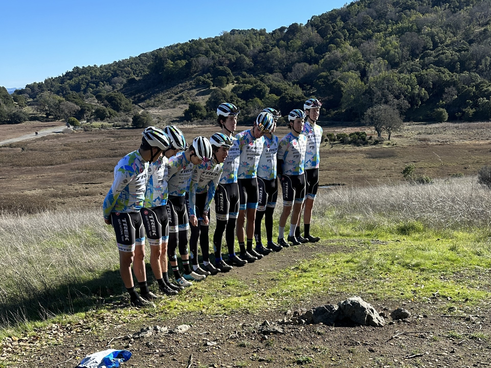
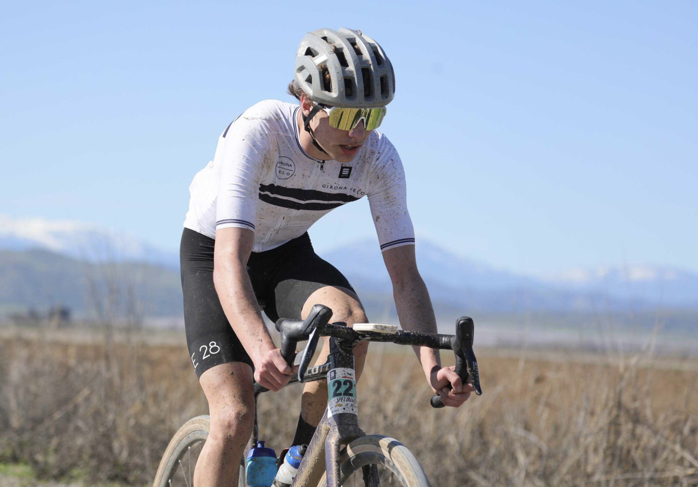

I graduated from Sir Francis Drake High School in California and am currently studying Software Engineering degree at VIA in Denmark.

I completed a multi-month professional internship with Synergy Wetsuits, where I worked in both the warehouse environment and office settings. I attended multiple conventions as a Product Development Coordinator.
I have competed at a high level across multiple cycling disciplines. I have raced professionally in the USA, competing in premier gravel events and on the UCI Mountain Bike circuit. I am also highly experienced in road cycling racing as a semi professional.

